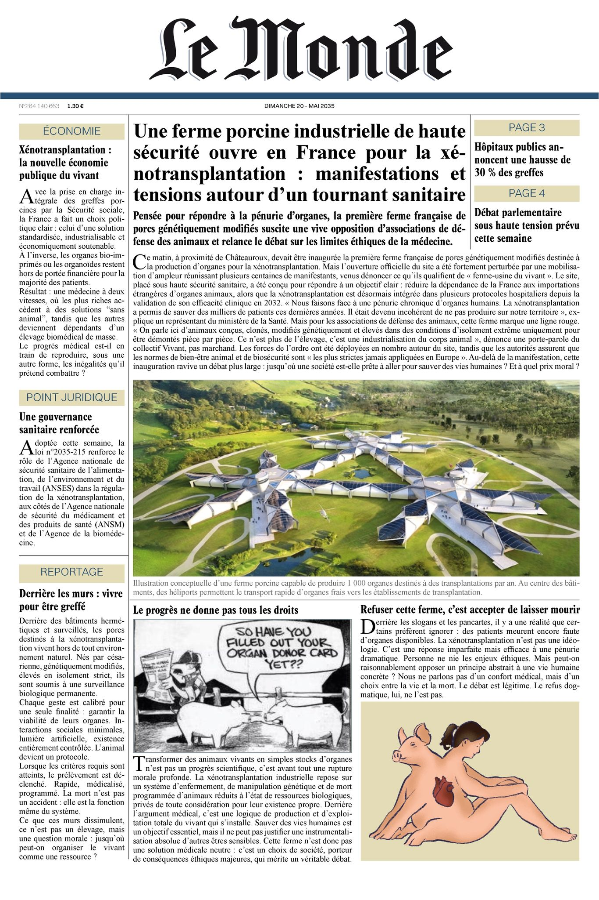
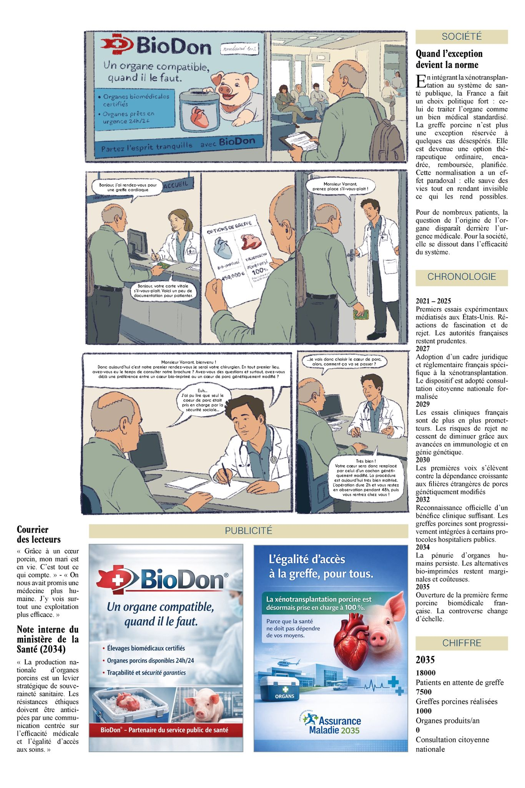

Nous sommes en 2026. La barrière entre l'homme et l'animal s'effondre. Cet observatoire dessine les réseaux de la xénotransplantation.
L'animal modifié, sa condition de vie et les droits du sentient.
Le pivot central : Législation, bio-économie et éthique philosophique.
L'urgence vitale des patients et l'arbitrage des religions.
L'histoire de la xénogreffe, de 1667 à nos jours.
Basculez entre Réseau (acteurs) et Rationalités (arguments).
Prenez les commandes du Comité National en 2050.
Explorez les futurs possibles de l'humanité hybride.
Analyse des tensions sociales et de la "Une" du Monde suite à l'inauguration du complexe de Châteauroux.
Vers une nouvelle forme de santé.
Termes techniques, médicaux et éthiques mis à jour selon les protocoles cliniques 2024-2025.
Le Knock-Out consiste à inactiver un gène (ex: GGTA1) pour supprimer un antigène. Le Knock-In consiste à insérer un gène (ex: hCD46) pour "humaniser" la réponse de l'organe.
Vision scientifique visant à multiplier les modifications génétiques (parfois plus de 60) pour saturer les barrières biologiques et réduire l'inconnu avant la greffe.
Signal "numéro 2" indispensable à l'activation des lymphocytes. Son blocage via des anticorps spécifiques est le verrou actuel pour empêcher le démarrage de la réponse immunitaire intense contre le greffon porcin.
Traitement de fond (stéroïdes, calcineurine) qui module la réponse immunitaire une fois engagée, par opposition au blocage de la co-stimulation qui agit en amont.
Designated Pathogen-Free. Statut sanitaire d'animaux élevés en milieu clos (barrière), garantis exempts de virus ou bactéries spécifiques susceptibles de provoquer des zoonoses chez l'humain.
Séquences virales intégrées au génome du porc. Leur inactivation via CRISPR est un enjeu majeur de la vision maximaliste pour prévenir tout risque pandémique.
Modèle industriel où l'organe n'est plus vendu seul, mais comme un "paquet" indissociable comprenant le greffon, les médicaments propriétaires, les dispositifs de perfusion et le monitoring.
Processus consistant à traiter un être vivant (le porc) comme une "chose" ou un dispositif médical programmable, brevetable et interchangeable.
Inactivation du récepteur de l'hormone de croissance visant à limiter la taille de l'organe porcin (notamment le cœur) pour qu'il reste compatible avec la cage thoracique humaine.
L'allogreffe est une greffe d'humain à humain (système actuel en pénurie). La xénogreffe est une greffe d'une espèce vers une autre (le futur biotechnologique).
Gène codant pour l'enzyme responsable de la synthèse du sucre alpha-Gal à la surface des cellules de porc. Son inactivation (KO) est la première étape indispensable pour stopper le rejet hyperaigu immédiat par le système immunitaire humain.
Transgène humain inséré dans le porc (KI) pour réguler le système du complément. Il agit comme un bouclier protégeant les cellules du greffon contre l'attaque du système immunitaire inné du receveur.
Protéine humaine exprimée par le porc donneur pour réguler la coagulation sanguine. Elle prévient la formation de caillots et les micro-thromboses qui pourraient détruire l'organe xénogénique peu après la greffe.
Technique chirurgicale consistant à implanter l'organe donneur à l'emplacement anatomique exact de l'organe d'origine après son retrait (ex: remplacer un cœur malade par un cœur de porc au même endroit). Par opposition à hétérotopique (greffe en supplément).
Ensemble de normes de qualité strictes imposées par les autorités (FDA, ANSM) pour la production des médicaments et, par extension, des porcs donneurs. Elles garantissent une traçabilité, une stérilité et une reproductibilité totale du "produit" thérapeutique.
Explorez les réseaux de controverses de la xénotransplantation. Cliquez sur les cartes pour analyser les enjeux scientifiques, sociaux et industriels.
Bienvenue, Docteur ès sciences. Vous avez été nommé à la tête du Comité National pour la Santé Humaine et Animale.
La pénurie d'organes humains a poussé la France à légaliser les xénogreffes, mais la société est au bord de la rupture.
Vous allez devoir gérer cette crise. Vos décisions impacteront la Science, la Santé Publique et l'Acceptation Sociale.
L'avenir de l'humanité est entre vos mains.